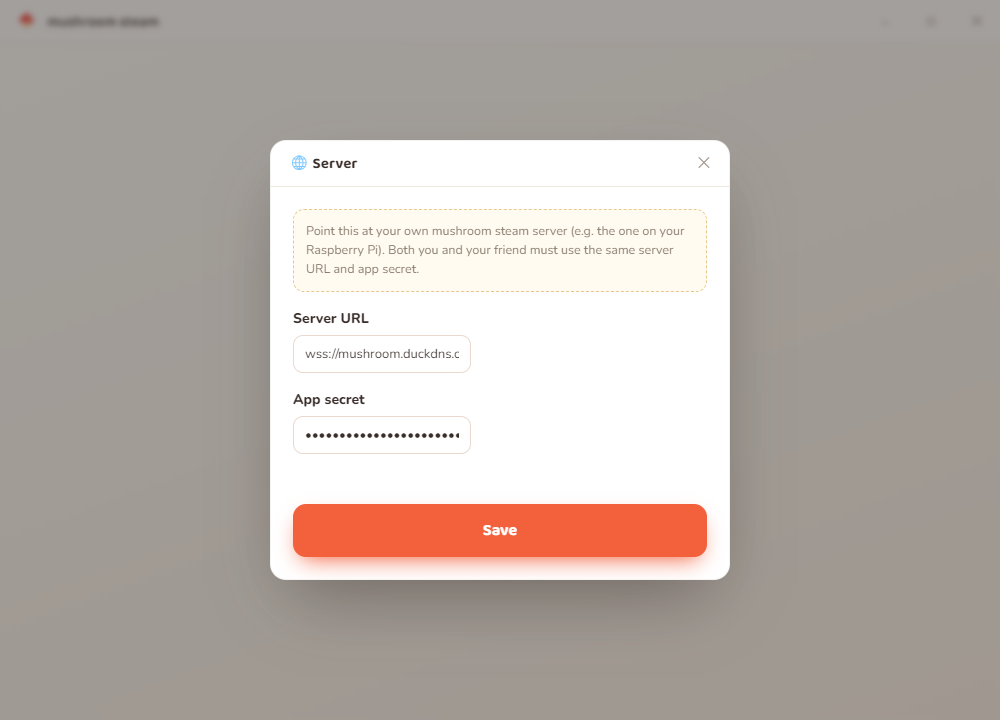
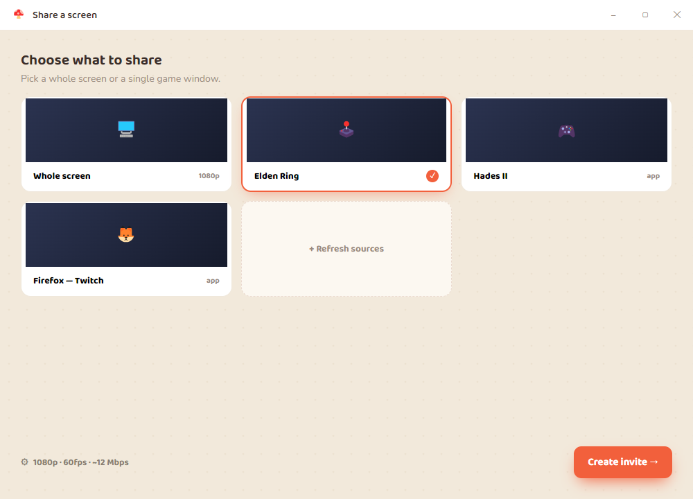
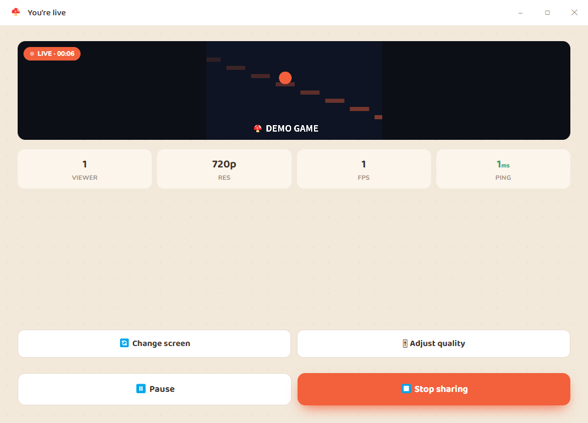
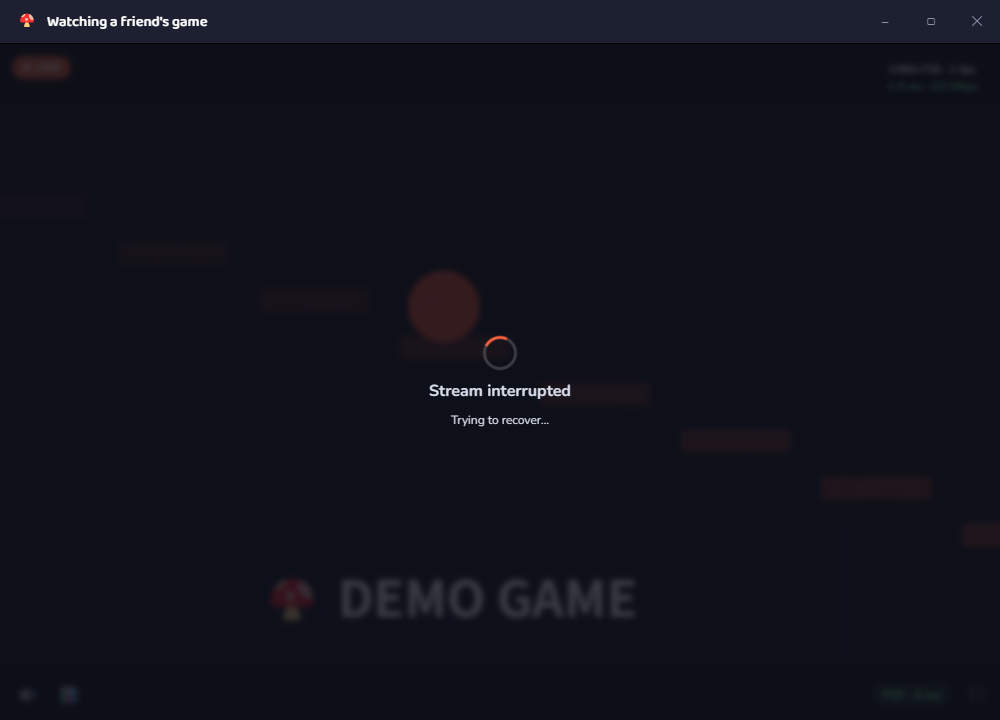
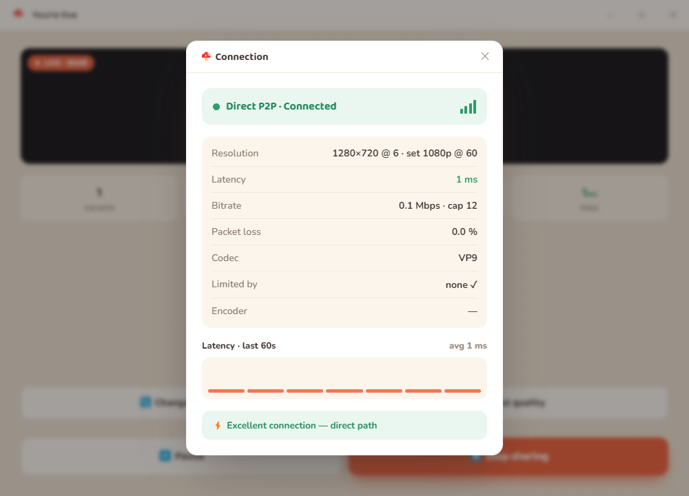

Need a server first? The app pairs through a signaling server you host. If you haven't set one up, start with Get started · Server (or use a LAN-only quick test).
The whole flow at a glance
flowchart LR A["🎮 Host
Share my screen"] --> B["Pick a screen
+ set quality"] B --> C["Get room code
MUSH-7Q2K4"] C -- "send code to friend" --> D["👀 Viewer
Watch a friend"] D --> E["Type the code"] E --> F["Server pairs them"] C --> F F ==> G["▶ Direct P2P stream"]
1 Install the app
Option A — prebuilt (Windows)
Download the portable mushroom steam X.Y.Z.exe from the project's
releases and run it. No install needed.
Option B — from source (any OS)
git clone https://github.com/Zachary-work/mushroom-steam.git
cd mushroomSteam
npm install
npm start # run the app
# or build a Windows portable .exe →
npm run build:winmacOS: first launch asks for Screen Recording
permission (System Settings → Privacy & Security → Screen Recording).
Windows works out of the box.
If Electron's binary didn't download during npm install, run
node node_modules/electron/install.js.
Per-window audio (Windows, optional): sharing just one app's sound uses a small native module. It builds automatically if you have the Visual C++ build tools + Windows SDK; otherwise the app simply falls back to system audio. See Stream audio.
2 Point the app at your server
On the home screen click 🌐 Server and enter:
| Field | Value |
|---|---|
| Server URL | wss://mushroom.duckdns.org:8443 (your server's address) |
| App secret | the same secret from the server's config.json |
It's saved per-user and survives app updates. Both the host and the viewer enter the same URL + secret.

3 Host or watch
🎮 Host (the one sharing)
- Share my screen → pick a monitor or a single window.
- Set quality, or keep the defaults (what the settings do →).
- You get a room code like
MUSH-7Q2K4. Send it to your friend. - While live you can hit 🔄 Change screen or 🎚 Adjust quality — both apply instantly, no reconnect.
👀 Viewer (the one watching)
- Watch a friend → type the
MUSH-XXXXXcode. - Press connect — the peer-to-peer stream starts.
Room codes use an unambiguous alphabet (no 0/O/1/I/L), are
case-insensitive, and you can paste them with or without the MUSH- prefix.



4 Check the connection
Click the live stats (host) or the stats button (viewer) to open the connection overlay. It shows the real numbers — useful to confirm things are working and to tune quality:
| Field | Means |
|---|---|
| Resolution / fps | What's actually being sent, alongside what you requested. |
| Bitrate | Live throughput vs. your cap. |
| Latency / packet loss | Round-trip time and lost packets. |
| Codec | H264 when hardware encoding is on, otherwise VP9. |
| Limited by | none, cpu, or bandwidth — the current bottleneck. |
| Path | P2P (direct) or Relay (via your TURN server). |

Seeing Relay instead of P2P? A strict NAT blocked a direct path, so video is going through coturn as a fallback — still private, just an extra hop.